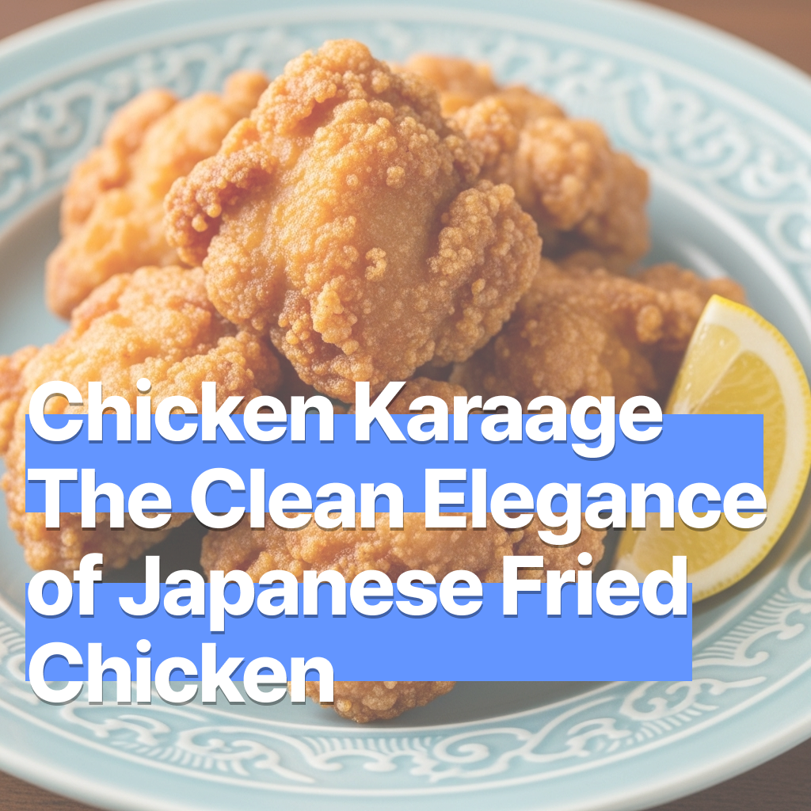

치킨 가라아게 – 일본식 튀김의 깔끔함
2025-07-16

치킨 가라아게 – 일본식 튀김의 깔끔함
깔끔하고 깊은 맛의 치킨을 찾고 계신가요? 얇고 바삭한 튀김옷 안에 촉촉한 육즙이 살아 있는 일본식 대표 튀김요리. 기름에 튀겼지만 느끼하지 않고, 입안에서 가볍고 단정하게 사라지는 맛. 치킨 가라아게—지금 함께 만들어볼까요?
🛒 재료 (2~3인분)
- 닭다리살(정육) 400g
- 간장 2큰술
- 맛술 2큰술
- 다진 생강 1작은술
- 다진 마늘 1작은술
- 소금·후추 약간
- 감자전분 또는 전분+밀가루 혼합 ½컵
- 식용유(튀김용) 적당량
- 레몬 조각 (선택)
- 마요네즈 or 타르타르소스 (선택)
🔪 재료 손질
닭고기는 3~4cm 크기로 썰어주세요 너무 작으면 튀기는 동안 육즙이 빠지고, 너무 크면 속까지 익히기 어려워요.
썰은 닭고기는 키친타월로 물기를 닦고 간장, 맛술, 생강, 마늘, 후추, 소금을 섞어 15~20분 정도 재워주세요 → 30분 이상 숙성해도 좋지만, 너무 오래 재우면 맛술의 알코올 향이 강해질 수 있으니 주의하세요.
튀기기 직전, 닭고기 표면의 물기를 다시 한번 제거하고 전분을 골고루 묻혀줍니다.
🍳 조리 방법
- 냄비에 식용유를 넉넉히 붓고 중불에서 예열합니다.
- 전분을 한 줌 떨어뜨렸을 때 바로 떠오르거나 바글바글 끓으면 기름 온도는 약 160~170℃로 적정해요.
- 닭고기를 넣고 첫 번째로 2~3분간 튀긴 뒤, 기름기를 빼며 잠시 식혀주세요.
- 다시 기름에 넣어 1~2분간 두 번째로 튀기면 더욱 바삭한 식감으로 완성됩니다.
- 접시에 담고, 레몬 조각 또는 마요네즈 소스를 곁들이면 더욱 맛있게 즐길 수 있어요.
⚠️ 조리 시 주의사항
튀기기 전 닭고기의 표면 수분은 반드시 제거해 주세요 → 물기가 많으면 기름이 튀는 사고가 발생할 수 있습니다.
기름 온도를 안정적으로 유지하면 튀김옷은 바삭하고 속까지 골고루 익습니다.
튀긴 후에는 종이 타월 위에서 잠시 두어 기름을 빼면 식감과 풍미가 더 깔끔해집니다.
💡 팁
- 생강 대신 유자청을 넣으면 은은한 향을 더해 특별한 풍미.
- 감자전분과 밀가루를 7:3 비율로 섞으면 겉은 바삭하고 속은 촉촉하게.
- 맥주, 우롱차, 무알콜 칵테일 등과 함께하면 집에서도 이자카야 분위기 완성!
깔끔한 가라아게의 맛. 튀김의 편견을 깨줍니다.